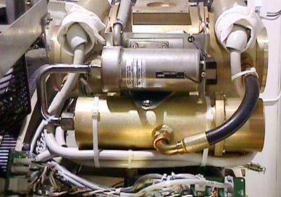

Operating Documentation
Direction 5114043-800, Rev# 9
LightSpeed 3.X Service Methods (Advanced)
Operating Documentation |
| Required Persons | Preliminary Reqs | Procedure | Finalization |
|---|---|---|---|
| 1 |
| Last Revised: | 20 November 2008 |
| Item | Qty | Effectivity | Part# | Manufacturer |
|---|---|---|---|---|
| Transformer Oil | AR | - | 2164148 (0.5 liter) | - |
| - | - | - | T0552G (1 gallon) | - |
| - | - | - | T0552F (5 gallons) | - |
| Item | Qty | Effectivity | Part# | Manufacturer | |
|---|---|---|---|---|---|
| X-Ray Tube, with new bolts | 1 | - | D3185T, D3186T, or D3189D | - | |
| Receptacle Quad O-Ring | 1 | - | 46208640P22 | - | |
| ELECTRICAL SHOCK HAZARD. | |
| POTENTIALLY LETHAL VOLTAGES ARE PRESENT IN THE GANTRY. | |
| Follow electrical lockout/tagout procedures. |
| POTENTIAL FOR PHYSICAL INJURY. | |
| POSSIBLE UN-COMMANDED GANTRY ROTATION. | |
| Engage Gantry Rotational lock. |
| SEVERE INJURY POSSIBLE. | |
| TUBE CAN SEPARATE FROM GANTRY, IF NOT TORQUED CORRECTLY. | |
| always use proper torque on all fasteners. |
Allow the tube unit to warm to room temperature before you install it.
| SEVERE INJURY POSSIBLE. | |
| TUBE CAN SEPARATE FROM GANTRY | |
| Do not remove factory installed mounting plates. |
Mounting plates are permanently installed at factory. DO NOT REMOVE IT.
Re-check facility power and make sure it is off.
| SEVERE INJURY TO PATIENT COULD OCCUR. | |
| USING THE WRONG BOLTS COULD PLACE STRESS ON BOLTS, CAUSING TUBE TO SEPARATE FROM GANTRY. | |
| Use proper bolts, per system type. |
Use the hoist to lift the new tube unit:
Position the tube on the gantry: The “crosses” on the mounting plate and on the collimator should fit in perfectly when the tube is aligned properly.
| NOTE: | To ease installation, fasten the top pressure plate to the rotating structure first. Then attach the bottom pressure plate. |
Fasten the lower and upper and pressure plates to the rotating structure with the four NEW M12 (50 mm) bolts. Set “pre-load” torque to value specified in Table 1.
| NOTE: | Use new bolts and washers from tube crate. Make sure to select the proper bolts. There are instructions in the crate, and on the tube itself. |
Set final torque to value specified in Table 2.
Table 1: M12 Bolt “Pre-Load” Torque Specification
| 25 lb-ft | 33 N-m | 295 in-lbs | 340 kg-cm |
Table 2: M12 Bolt Final Torque Specification
| 49 lb-ft | 66 N-m | 590 in-lbs | 680 kg-cm |
Illustration 1: Tube and mounting plate - M12 bolts

Attach the tube I.D. cable to the 12 pin mate-N-Lock connector on top of the tube.
Attach the tube pump and fan power cable to the 4 pin mate-N-Lock connector.
Fasten the grounding strap to the 1/4-20 ground stud on top of the tube unit.
Remove the plastic cap plug from each cable receptacle on the tube unit.
| NOTE: | Take care not to lose the rubber quad rings for the High Voltage cables. |
Lightly wet the new rubber quad ring with transformer oil (917).
Return the quad ring to its slot at the top of the receptacle retaining ring.
Pour transformer oil (917) into the receptacle to a depth of 10 mm (0.375 in).
| Incorrectly routed or secured HV cables will result in damage to the HV cables and/or other parts of the gantry. | |
Be sure to route the HV cable as shown in Illustration 2.
Illustration 2: HV Cables Properly Routed and Secured

Align the cable terminal orienting key with the notch in the receptacle.
| Do not over tighten the locking ring. Over tightening can deform the cable plug sealing surfaces, break the oil seal between receptacle and housing, twist the receptacle, and disrupt internal wiring. | |
Slowly insert the cable, to engage the connector pins, and seat the cable in the well.
Tighten the cable locking ring.
Rotate the cable strain relief for a clean cable dress.
| IF YOU GET OIL ON YOUR HANDS, WASH THEM NOW | |
Carefully wipe up all excess oil.
Secure HV Cables using Large Ty-Raps, as shown in Illustration 2.
Disconnect hoist from tube and boom.
Remove the post and boom from the gantry (see Illustration 3) .
Illustration 3: Right Front Gantry Cover Mounting Bracket

Check for oil leaks:
Wrap rags or paper towels around the cable horns, and tape them into place.
Manually rotate the tube to the 6 o’clock position.
Return the tube to the 3 o’clock position
Remove the toweling and wipe up all excess oil.
Wipe off the cable horns, locking rings and strain reliefs with an alcohol-dampened rag.
Repeat with a dry rag.
Wrap the cable strain reliefs and locking rings with a single layer of absorbent paper tissue.
You can use two inch wide strips cut from a paper napkin.
Wrap the bottom edge of the paper around the top end of the cable horn, and tape it in place.
Extend the top edge of the paper over the top of the locking ring, and tape it to the plastic cable strain relief.
Remove paper after leak check.
If oil leaks are found, tighten the locking ring slowly until there is no leakage, paying attention to not over-tighten.
Install the right gantry front cover bracket. Reference Illustration 3.
Restore system power at the main disconnect panel.
Turn on gantry 120 VAC, HVDC POWER or 550 VDC Enable, and AXIAL DRIVE ENABLE service switches. Wait at least 10 minutes to warm up the filament.
No finalization required.